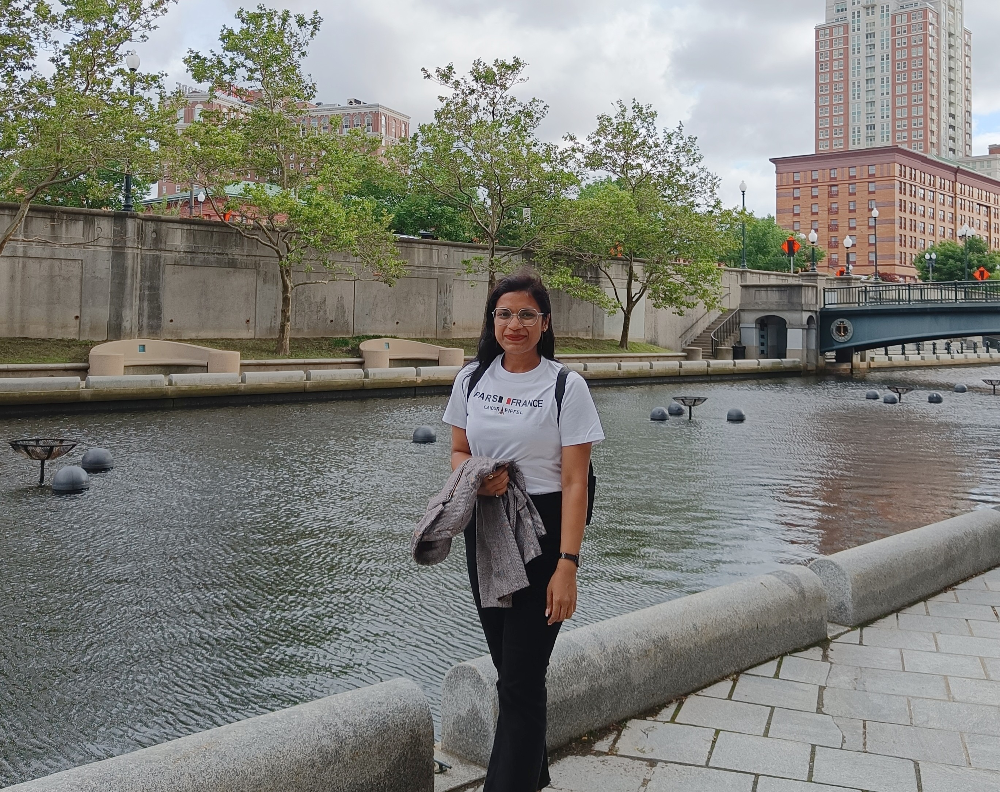

Mailing address:Center for Mathematics and Artificial Intelligence (CMAI)
Department of Mathematical Sciences
George Mason University, Fairfax
Virginia 22030, United States
Email: sshah66@gmu.edu
Welcome to my webpage! Currently, I am working as a postdoctoral research fellow in the Department of Mathematical Sciences , at the George Mason University, with Prof. Harbir Antil. Prior to that, I was working as a DGAPA postdoctoral research fellow in the Institute of Mathematics (IM), at the National Autonomous University of Mexico (UNAM), with Prof. Gerardo Hernandez Dueñas. I obtained my Ph.D. degree from the Department of Mathematics, at the University of Delhi, under the supervision of Prof. Randheer Singh. My research focuses on mathematical modeling and structure-preserving scientific computing for nonlinear transport. I develop methods for hyperbolic conservation laws, transport-aware reduced-order modeling, PDE-constrained optimization, and physics-constrained generative modeling, with applications ranging from multiphase and geophysical flows to energy systems and nonlinear optics.
Research Interests
- Hyperbolic Conservation Laws and Nonlinear PDE Systems
- Structure-Preserving Numerical Methods and Scientific Computing
- Transport-Aware Reduced-Order Modeling, Optimal Transport, and PDE-Constrained Optimization
- Physics-Constrained Generative Modeling and Scientific Machine Learning
- Applications in Multiphase and Geophysical Flows, Energy Systems, and Nonlinear Optics
Education
Ph.D. in Applied Mathematics
University of Delhi, India (Oct, 2016 -- March, 2021)
Thesis: EVOLUTION OF NONLINEAR WAVES IN QUASILINEAR HYPERBOLIC SYSTEMS
Advisor: Prof. Randheer Singh
M.Sc. in Mathematics
Deen Dayal Upadhyay Gorakhpur University, India (Aug, 2013 -- Jul, 2015)
B.Sc. in Mathematics & Physics
Deen Dayal Upadhyay Gorakhpur University, India (Aug, 2010 -- Jul, 2013)